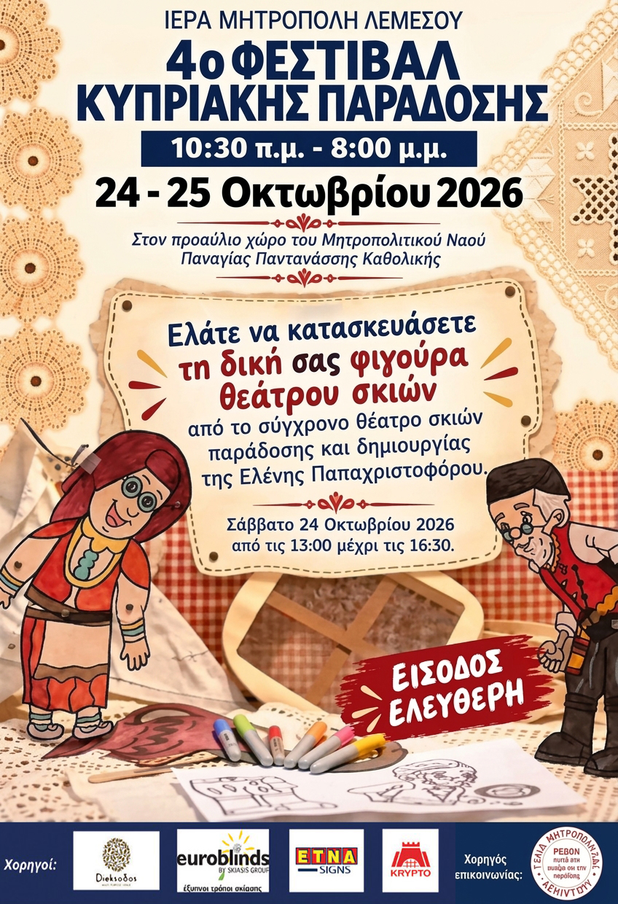
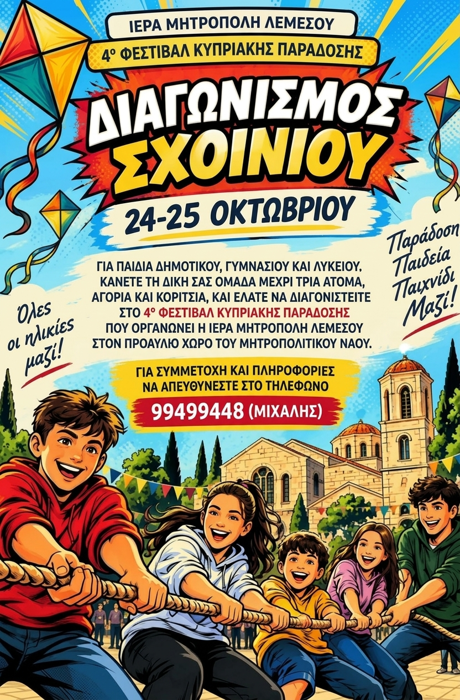
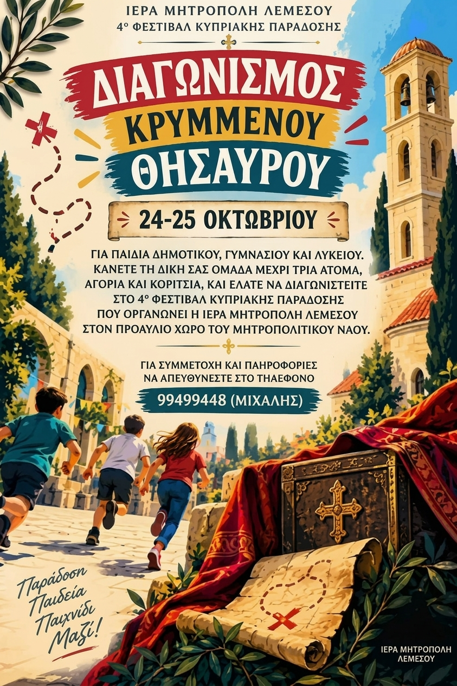

Ιερά Μητρόπολη Λεμεσού
4ο Φεστιβάλ
Κυπριακής Παράδοσης
24 – 25 Οκτωβρίου 2026
Στον προαύλιο χώρο του Μητραπολιτικού Ναού Παναγίας Παντανάσσης Καθολικής



Στο Φεστιβάλ υφαντικής,
στης Λεμεσού την πόλη,
καλιούμεν σας δημόσια,
να εφρανθούμεν όλοι.
Τζεικάτω στην Καθολιτζήν,
εις την Μητρόπολην μας,
να θυμιθούμεν τα παλιά,
τζιαι την Παράδοσην μας.
Στον χώρον τον προαύλιον,
να σμίξουμε παρέα,
τέχνες να δούμεν πρωτινές,
τζιαι έθιμα ωραία.
Σαββάτον στες κοστέσσερεις (24),
μηνός του Οκτωβρίου,
τζιαι στες κοσπέντε (25) Τζυρκατζήν,
ημέραν του Κυρίου.
Βάρτε του μιάν σημείωσην,
του ημερολογίου,
εν είσοδος ελεύθερη,
(α)κόμα τζιαι του μουσείου.
Κοπιάστε αν γυρεύκετε,
μιαν έξοδον να βκείτε,
τζιαι σπιτικά εδέσματα,
για να προμηθετείτε.
Σιουσούκκο θα 'σσει παλουζέ,
γιόρκιν καμπόσα είδη,
είτε με το αμύγδαλον,
είτε με το καρύδιν.
Χαλλούμιν ως τζιαι αναρήν,
ελάτε να γευτείτε,
ούλλα βραστά, ολόφρεσκα,
πως γίνουνται να δείτε.
Για να μεσομερκάσετε,
να προετοιμαστείτε,
επιλογές θα 'σσει πολλές,
όπως επιθυμείτε.
Σουβλάκιν με το σιεφταλλίν,
τζιαι κλέφτικο να φάτε,
ή μακαρόνια φουρνιστά,
άμαν τα προτιμάτε.
Τρισπίλιν θα 'νει το χαρτζίν,
με χογλαστόν το ρέσιν,
αν θέλετε το πιάτο σας,
Κυπριακά να δέσει.
Μέχρι τζιαι σούππαν τραχανάν,
τζιαι κανελόνια θα 'σσει,
σίουρα εν θα φύετε,
με όφκερον στομάσσι.
Τζιαι Καφενείον βέβαια,
θα 'σσει για τον καφέ σας,
κόμα τζι' ο φρέσκος ο Χυμός,
εν στες επιλογές σας.
Επώνυμοι τραγουδηστές,
εν να μας τραγουδήσουν,
της Κύπρου στιχουργήματα,
για να μας αθυμίσουν.
Χορούς παραδοσιακούς,
εν να παρουσιάσουν,
τζιαι τσαττιστά θ' ακούσετε,
που εν να τα ταιρκάσουν.
Το κάθε τι στην ώραν του,
θα γίνει εννοείτε,
για τούτον πριν να έρτετε,
το πρόγραμμαν να δείτε.
Αν εν τα κοπελλούθκια σας,
που σας βαρικολιούσιν,
φέρτε τα τζι' εγγυούμαστεν,
πως εν θα βαρεθούσιν.
Θα 'σσει πηλόν τζιαι αργαλιόν,
για να ποσκολιστούσιν,
παιχνίδκια της παράδοσης,
να διαγωνιστούσιν.
Με γνώσεις εν το σίουρον,
πως θα εμπλουτιστούσιν,
τζι' ο «Καραγκιόζης» θέατρον,
θα παίξει να τον δούσιν.
Όσον για την υφαντικήν,
θα μάθετε καμπόσα,
κεντήματα τζιαι υφαντά,
σκλουβέρκα τζι' άλλα τόσα.
Άλλα τα Λευκαρίτικα,
που πλέκαν με την ώραν,
τζι' άλλα τ' Αγιαντωνίτικα,
που γίνουνταν στη Χώραν.
Άλλα τα Καραβκιώτικα,
άλλα του Λευκονίκου,
άλλα εν τα Φυδκιώτικα,
τζιαι τζείνα της Λαπήθου.
Στου Τζοιλάνιού το κέντημαν,
εφτά κλωστές κεντούσαν,
γι' αυτόν εφταλοΐτικα,
εν που τα ελαλούσαν.
Γιόρκιν πασαλοήτικα,
Μεταξωτά θα δείτε,
τζι' απου την ιστορίαν τους,
θα ενθουσιαστείτε.
Βρακάες θα γυρίζουσιν,
Ζιβάναν να τζερνούσιν,
τζιαι με γλυκόν του κουταλιού,
θα σας υποδεχτούσιν.
Έσσει για ούλλους τζέρασμαν,
κοπιάστε να σας δούμεν,
διότι την παράδοσην,
πρέπει να την κρατούμεν.
Σας περιμένουμεν